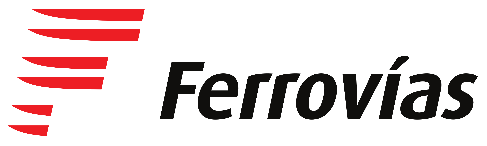

Sobre Nosotros
Nexo Rail brinda servicios ferroviarios modernos para conectar las principales ciudades del país de manera rápida, segura y sustentable.
🚆 Destinos
Buenos Aires, Rosario, Córdoba y Tucumán.
⚡ Velocidad
Trenes modernos de alta eficiencia.
💺 Comodidad
Asientos amplios y servicio a bordo.
🚆 Empresas Ferroviarias
El Centro de Transporte Nexo integra las principales empresas ferroviarias que operan servicios de pasajeros en el Área Metropolitana de Buenos Aires y otros destinos del país.

🚇 Metrovías
Empresa concesionaria de servicios ferroviarios y de subterráneos, brindando un transporte seguro y eficiente para miles de pasajeros.
🚆 Trenes Argentinos
Operadora ferroviaria nacional que conecta ciudades y regiones del país mediante servicios de pasajeros de corta, media y larga distancia.

🚉 Ferrovías
Empresa ferroviaria que presta servicios de transporte de pasajeros en el Área Metropolitana de Buenos Aires con modernos estándares de calidad.